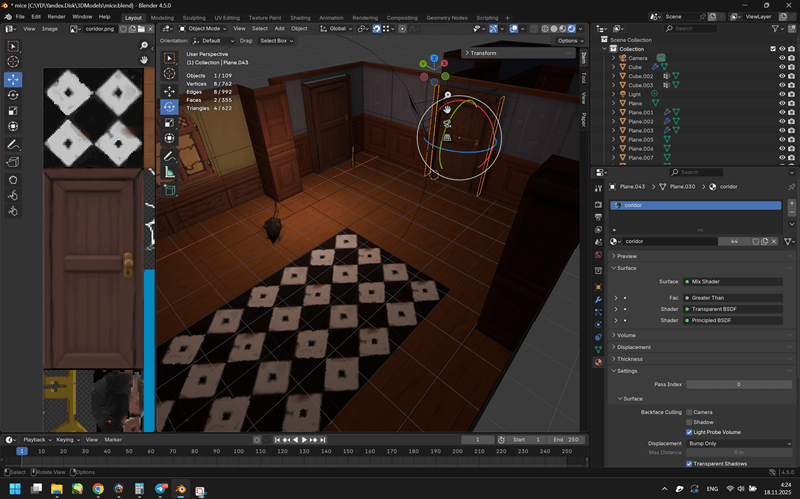

========================[ Tapochka3D ]====================== [ Главная ] [ Контакты ] ------------------------------------------------------------
Всем привет! Разрабатываю проект под PS1. В первую очередь хотелось просто увидеть в живую на таком железе свои модельки, лучше понять возможности стилизации с учетом всех технических ограничений.
По части того с чего начать разработку очень помогло творчество с YT-канала Bandwidth_ytb, его видосы с теорией и примеры. В основе проекта лежат открытый C++ фреймворк от Lameguy64 для разработки своих хоумбрю и примеры работы с динамическим освещением
Для создания \ анимирования \ экспорта моделек в игру используется блендер

- Реализован скрипт для экспорта геометрии \ UV \ анимаций, нормалей.
- Для персонажей с мимикой \ объектов с анимацией UV реализовано индексирование и экспорт отдельных UV групп для реализации смены эмоций \ движений.
В дальнейшем нужно будет реализовать экспорт групп объектов (подумать как все это делить на условные уровни) \ в любом случае необходима разбивка на отдельные области для оптимизации вывода и проверок в движке тк то как это реализовано сейчас слишком дорого при большом кол-ве "активных" объектов на уровне
В самой игре реализованы
- модельки крысок \ ключа \ приблезительно намоделены некоторые части локаций \ др. пропы
- логика триггеров \ крысок \ рычагов (+анимация для тапочки) \ двигающихся платформ. Крыски пока не атакуют и анимки \ методы атак у игрока пока не прикручены.
- контроллер камеры с небольшими возможностями для катсцен (panTo \ lookAtTarget \ wait )
- сайд функции для управления игроком в сценках (вроде "иди туда" \ повернись в сторону )
- тайлы текстур для разных локаций (замковол-бетонная частично нарисована \ собрана из откр.текстур, вторая - более домашняя уже перенос своих текстурок из прошлых работ)
- контроллер текста \ базовые диалоговые окошки \ текст через свои текстуры-тайлы
- эмоции для Тапочки (главная героиня) и смена их через переключение UV координат - это нужно будет переработать в универсальный класс \ методы
- запекание света для снижения частоты отрисовки конкретно освещения \ отдельных объектов
- попытки работы со звуком. Пока не очень понятны спецификации стандарты местного звукового формата .vag - есть разночтения при воспроизведении на эмуляторах \ железе и есть проблемы со сбросом звукового буфера через методы фреймворка.
Так же пока не касался подгрузки данных с диска - базовое понимание появлось только по запаковке бинарников на диск и запуске на консоли, но тут тоже очень много нюансов - надо разбиратся. На данный момент тестовый билд помещается целиком в оперативку консоли (чистый бинарник "Тапочки" пока менее 1 мб с учетом текстур \ моделек и звуков)
Проект разрабатывается в свободное время и учитывая,
что навыков по многим аспектам у меня нет получается очень неспешно.
Но надеюсь у меня еще будет время поработать над проектом. Следите за обновлениями и всего хорошего!